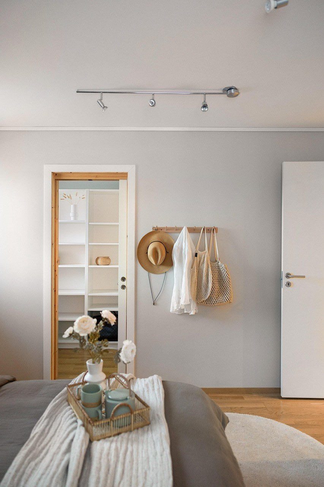
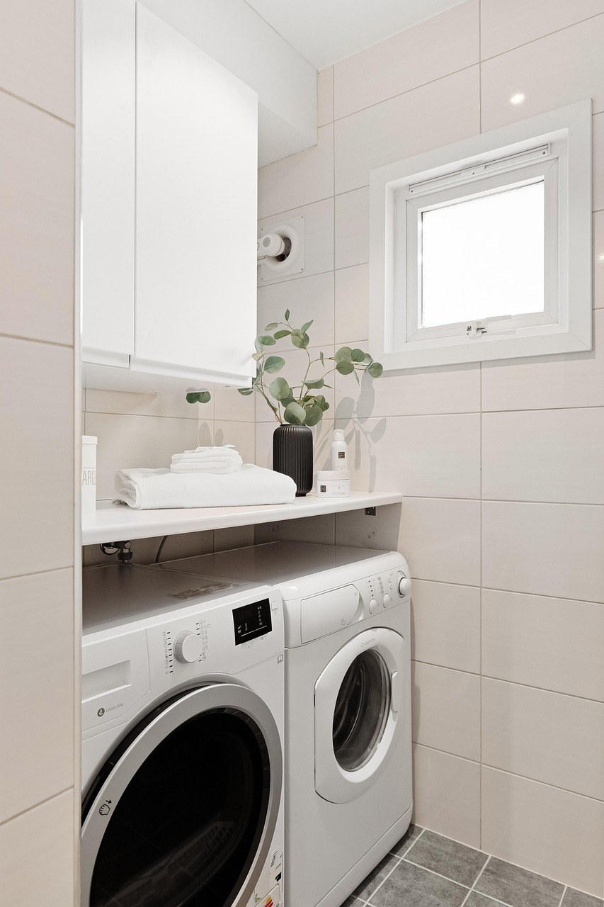
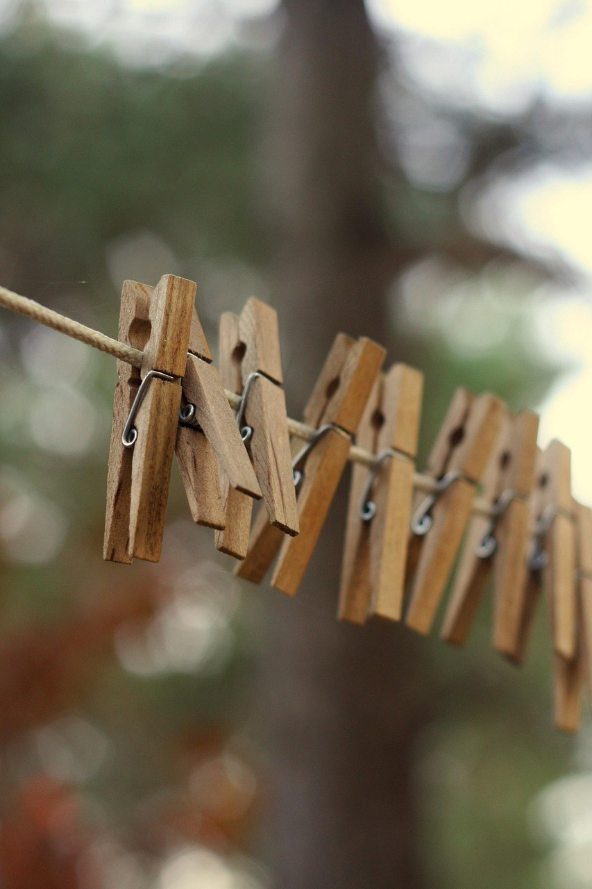

[사진 1: 썸네일]
전기요를 한 철 깔고 나면 땀과 먼지가 배어서 빨고 싶어지죠. 그런데 안에 열선이 들어 있으니 세탁기에 그냥 넣어도 되는지, 손빨래를 해야 하는지 헷갈려요.
전기요 세탁은 제품마다 되는 방법이 꽤 달라요. 한국소비자원 시험에서도 세탁 가능 표시가 있는 제품들조차 세탁 횟수나 방법에 제한이 많았다고 해요. 오늘은 빨기 전에 확인할 다섯 가지를 순서대로 정리해 드릴게요.
[사진 2]
📷 [직접 찍은 사진 넣기: 전기요 모서리에 붙은 세탁 라벨을 가까이 찍은 모습]
가장 먼저 볼 것은 전기요 모서리의 라벨과 취급설명서예요. 본체를 통째로 물세탁할 수 있는지, 겉커버만 분리해서 빠는지, 세탁기를 써도 되는지가 제품마다 달라요.
세탁 가능 표시가 있어도 '손세탁만', '물 온도 몇 도 이하', '세탁 횟수 제한' 같은 조건이 붙는 경우가 많아요. 라벨에 세탁 표시가 없다면 물세탁은 하지 말고 제조사에 먼저 문의하세요.
✍️ [내 경험 한두 줄: 우리 집 전기요는 몇 년째 쓰고 있고, 빨아 본 적이 있나요?]
| 라벨 표시 | 세탁 방법 |
|---|---|
| 세탁기 사용 가능 | 컨트롤러 분리 → 세탁망 → 울·섬세 코스 |
| 손세탁만 가능 | 미지근한 물에 중성세제로 눌러 빨기 |
| 커버만 분리 세탁 | 커버만 빨고 본체는 마른 수건으로 닦기 |
| 세탁 표시 없음 | 물세탁 금지, 제조사 문의 |
온도 조절기(컨트롤러), 전원선, 어댑터는 물에 닿으면 안 되는 부분이에요. 세탁 전에 플러그를 뽑고 본체와 연결된 부분을 끝까지 분리하세요.
분리가 안 되는 일체형이라면 세탁기에 넣지 말고, 설명서에 적힌 방법만 따르세요. 연결 단자 부분에 물이 들어가지 않게 하는 것이 핵심이에요.
[사진 3]
세탁기 사용이 되는 전기요라면 반으로 접어 큰 세탁망에 넣고, 울·섬세처럼 약한 코스를 고르세요. 세제는 중성세제를 쓰고, 섬유유연제나 표백제는 설명서에서 허용할 때만 써요.
안에 열선과 단열층이 있어서 강한 탈수는 열선을 꺾거나 상하게 할 수 있어요. 탈수는 약하게 짧게 하거나, 설명서에서 금지하면 생략하세요. 손세탁이라면 비틀어 짜지 말고 눌러서 물기를 빼요.
[사진 4]
📷 [직접 찍은 사진 넣기: 빨래건조대 위에 이불을 평평하게 펼쳐 놓은 모습]
전기요 세탁에서 가장 조심할 단계가 건조예요. 의류건조기나 히터 바람으로 말리면 과열이나 절연 손상이 생길 수 있어서 피하는 게 좋아요.
바람이 잘 통하는 그늘에 빨래건조대를 펴고 평평하게 널어 말리세요. 한쪽으로 접어 걸면 열선이 꺾이고 접힌 부분이 잘 안 말라요. 겉은 말라 보여도 안쪽 솜은 젖어 있을 수 있으니 하루 이상 넉넉히 말려요.
✍️ [내 경험 한두 줄: 겨울에 큰 이불은 보통 어디서 말리나요? (베란다/거실/코인빨래방)]
완전히 마른 것을 확인한 뒤에 컨트롤러를 연결하고 잠깐 켜 보세요. 표시등이 깜빡이거나 한쪽만 따뜻하면 계속 쓰지 말고 A/S 점검을 받는 게 안전해요.
철이 끝나 넣어 둘 때는 열선이 꺾이지 않게 느슨하게 말거나 크게 접고, 위에 무거운 물건을 올리지 마세요. 습기 없는 곳에 두면 다음 겨울에 꺼낼 때도 깔끔해요.
Q. 전기요는 몇 번까지 빨아도 되나요?
A. 제품마다 달라요. 세탁 횟수 제한이 적힌 제품도 있으니 설명서를 확인하고, 평소에는 커버를 씌워 커버 위주로 빨면 본체 세탁을 줄일 수 있어요.
Q. 세탁 대신 닦기만 해도 되나요?
A. 세탁 표시가 없거나 일체형이라면 전원을 뽑고 물기를 꽉 짠 수건으로 겉면을 닦은 뒤 완전히 말리는 방법이 안전해요.
정리하면, 전기요 세탁은 라벨 확인 → 컨트롤러 분리 → 세탁망·약한 코스 → 그늘 건조 → 전원 시험 순서예요. 세탁 표시가 없다면 무리해서 빨지 말고 커버를 씌워 쓰는 쪽이 오래 쓰는 방법이에요.
여러분은 전기요를 어떻게 관리하고 계신가요? 커버를 씌우는지, 통째로 빠는지 댓글로 알려 주세요.
인스타그램 @todayzip.info 에서 살림 꿀팁을 30초 영상으로도 볼 수 있어요.